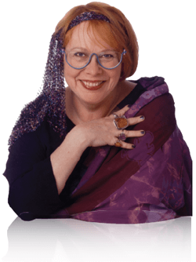

Paula Danziger (August 18, 1944 – July 8, 2004). Born in Washington, D.C. and raised in New York, Paula Danziger knew since the second grade that she wanted to be a writer. She is the author of many classic children's books, including The Cat Ate My Gymsuit, The Divorce Express, and the Amber Brown series. Paula Danziger loved to travel and meet young kids all over the world. She was embraced by her audience for her ability to relate to children through the characters in her stories. She was often known for "borrowing" children (only the ones she knew) for her inspiration. The Amber Brown character was conceived during one of her trips with her niece. Danziger was also the recipient of numerous literary awards, including the Children's Choice Award from the International Reading Association and the 2003 Garden State Children's Book Award. She spent most of her time in New York City and London, England.

The Danziger family lived in Nutley, New Jersey, and Hollidaysburg, Pennsylvania, before settling in Metuchen, New Jersey when Paula was in sixth grade.[2] In an interview with BookPage, she said: "At age 12, I was put on tranquilizers when I should have gotten help. There was nothing major and awful. I just didn't feel [my family] was supportive and emotionally generous. My father was a very unhappy person, very sarcastic, and my mother [was] very nervous and worried about what people thought. They weren't monsters, but it wasn't a good childhood."[3] She graduated from Metuchen High School.[4]
She was encouraged to study nursing in college but instead studied to become a teacher at Montclair State University, where she was mentored by poet John Ciardi.[3] After earning a bachelor's degree in education, Danziger taught junior high school English while pursuing a master's degree.[5] After being injured in an automobile accident, she had trouble writing, as she was only able to write backwards. She was able to regain the ability to write normally, but she was able to write backwards for the rest of her life. This sequence of events prompted her to do what she really want to do in life; she began writing.
Following the success of The Cat Ate My Gymsuit, Danziger left teaching to write full-time in 1978. She maintained homes in New York City and in Bearsville, New York. For several years, she had a flat in London, where she was known for presenting a regular item about children's literature on the BBC's Saturday morning show Live & Kicking in the 1980s and 1990s.[7]
Danziger's debut novel was The Cat Ate My Gymsuit, whose characters were largely based on her experiences from childhood. She continued writing books for teens through the 1980s, expanding to books for younger readers with the Amber Brown series, whose protagonist is based on Danziger's niece Carrie.[3] She frequently gave lectures and speeches, wearing elaborate costumes and calling herself a children's Dame Edna Everage. She is quoted as saying that her alternative career choice would have been as a stand-up comedian.
She collaborated with Ann M. Martin twice, with P.S. Longer Letter Later (1998) and Snail Mail No More (2000).[10] The two would send correspondence to each other as if they were the main characters. Paula Danziger and author Bruce Coville read their work to each other over the phone beginning in 1992[11], continuing for over a decade as a two-person writers' group[12] and later including author Elizabeth Levy. Following Danziger's passing, Coville and Levy continued her Amber Brown series, beginning with Amber Brown is Tickled Pink (2012), which told the story of the title character's mother's re-marriage.[13]

Paula Danziger's works were nominated for and won many American state children's book awards, including the Massachusetts Children's Book Award for The Cat Ate My Gymsuit in 1979 and the California Young Reader Medal for There's a Bat in Bunk Five in 1984. Four of her works were named IRA-CBC Children's Choices: The Pistachio Prescription in 1979, The Cat Ate My Gymsuit and Can You Sue Your Parents for Malpractice? in 1980, and There's a Bat in Bunk Five in 1981.
The Society of Children's Book Writers and Illustrators awards the Amber Brown Grant, which provides an all-expense-paid, full-day visit by a well-respected children's author or illustrator, a stipend to assist in creating the event, and $250 worth of books by the visiting author, to one or two schools annually in her honor.[14]